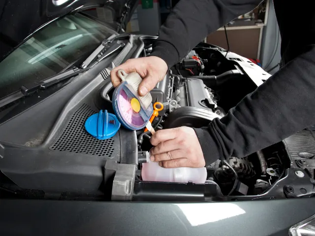
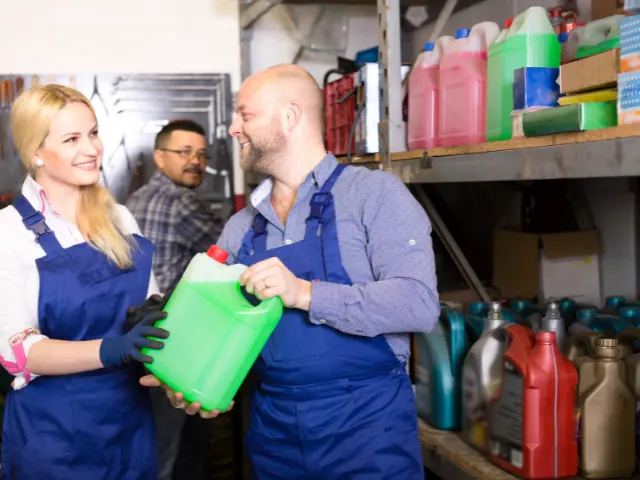
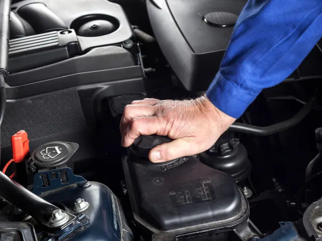

Partnerbijdrage
3 antivries tips om de Motor te beschermen tegen extreme temperaturen
Gepubliceerd op 13 november 2024

Klimaatverandering is een belangrijke factor geworden voor autobezitters over de hele wereld. Extreme weersomstandigheden zoals extreme hitte of vorst komen steeds vaker voor. Deze veranderingen hebben niet alleen invloed op onze gezondheid, maar ook op de conditie van onze auto’s. Een van de belangrijkste onderdelen die de motor helpt om consistent te werken bij verschillende temperaturen is de koelvloeistof. Het tijdig selecteren en vervangen van antivries is van cruciaal belang om ernstige storingen te voorkomen en de levensduur van je auto te verlengen.
Waarom is het belangrijk om het voertuig aan te passen aan de klimaatverandering?
Het is belangrijk om te beseffen dat de standaardinstellingen van het voertuig ontworpen zijn voor bepaalde klimatologische omstandigheden. Met de toenemende onvoorspelbaarheid van het weer zijn de traditionele instellingen echter mogelijk niet voldoende om extreme temperaturen aan te kunnen. Koelvloeistof speelt een sleutelrol bij het handhaven van een optimaal thermisch gedrag van de motor.
Temperaturen onder het vriespunt in de winter of oplopend tot +40°C in de zomer kunnen ervoor zorgen dat standaard antivries niet meer voldoet. Een verkeerde keuze van koelvloeistof kan leiden tot oververhitting van de motor of bevriezing van het koelsysteem, met kostbare schade tot gevolg.

Welke soorten koelvloeistoffen zijn het meest geschikt voor extreme temperaturen?
Er zijn verschillende soorten koelvloeistoffen, elk ontworpen voor specifieke klimaatomstandigheden:
- Antivries op basis van ethyleenglycol is het meest gebruikte type koelvloeistof. Het werkt effectief bij zowel hoge als lage temperaturen, waardoor het veelzijdig is voor de meeste regio’s. Het moet echter vaker worden vervangen. Het moet echter vaker worden vervangen, vooral bij zware motorbelastingen.
- Antivries op basis van propyleenglycol is een milieuvriendelijkere optie die ook stabiel is bij verschillende temperaturen. De kosten kunnen echter hoger zijn. Dit type koelvloeistof behoudt zijn eigenschappen beter bij temperatuurschommelingen, waardoor het risico op schade minimaal is.
- Antivries met additieven voor extreme temperaturen – speciaal ontworpen formules voor omstandigheden met strenge winters of hete zomers. Deze vloeistoffen bevatten extra corrosieremmers om het koelsysteem te helpen beschermen tegen de negatieve effecten van extreme temperaturen.

Invloed van extreme temperaturen op koelsystemen
Op basis van statistische gegevens is het duidelijk dat extreme temperatuuromstandigheden een ernstige invloed hebben op de levensduur van de koelvloeistof en het risico op motorstoringen:
Weersomstandigheden | Risico op oververhitting van de motor | Risico op bevriezing van het koelsysteem | Gemiddelde levensduur van de koelvloeistof |
Temperatuur boven 30°C | 50% | 0% | 2-3 jaar |
Temperatuur onder -20°C | 10% | 40% | 1-2 jaar |
Temperatuur fluctuaties van -10°C tot +30°C | 30% | 20% | 2-3 jaar |
Uit gegevens blijkt dat het risico op oververhitting van de motor aanzienlijk toeneemt bij hoge temperaturen en dat de kans op bevriezing van het koelsysteem toeneemt bij vriestemperaturen. Temperatuurschommelingen zorgen ook voor extra belasting van koelsystemen, waardoor het gebruik van gespecialiseerde antivries nodig is.
Hoe kies je de juiste antivries voor jouw regio?
Het is belangrijk om je voertuig aan te passen aan de klimaatverandering door een koelvloeistof te kiezen die past bij de klimaatomstandigheden van jouw regio. In gebieden met strenge winters moet je een antivriesmiddel met een laag vriespunt kiezen. In warme landen moet je op zoek gaan naar vloeistoffen met een hoge weerstand tegen oververhitting.
Om de juiste koelvloeistof te vinden voor je auto, zoals de Opel Corsa, kun je terecht op sites zoals AUTODOC. Daar vind je een breed assortiment antivriesproducten die zijn ontworpen voor verschillende klimaatomstandigheden en soorten gebruik.

Hoe beïnvloedt het regelmatig verversen van de koelvloeistof de levensduur van de auto?
Het regelmatig verversen van koelvloeistof is een belangrijk onderdeel van het onderhoud van je auto, zodat hij lang meegaat. Moderne antivries is ontworpen om lang mee te gaan, maar na verloop van tijd verliest het zijn eigenschappen. Bij extreme temperaturen moet antivries vaker worden ververst om oververhitting en corrosie van motoronderdelen te voorkomen.
Onderzoek heeft aangetoond dat het tijdig en correct vervangen van koelvloeistof de levensduur van de motor met 15-20% kan verlengen. Dit toont duidelijk aan dat het vervangen van antivries niet alleen een technische noodzaak is, maar ook een echte manier om het risico op storingen te verminderen en de levensduur van je auto te verlengen.
Hoe vervang ik de koelvloeistof?
Het vervangen van de koelvloeistof hangt af van het specifieke automodel. Meestal wordt het oude antivriesmiddel afgetapt, het koelsysteem doorgespoeld en nieuwe vloeistof ingegoten. Het is ook aan te raden om de staat van de radiateur en de slangen te controleren om lekken en andere schade te voorkomen.
Conclusie
Klimaatverandering heeft een grote invloed op de werking van voertuigen en het kiezen van de juiste koelvloeistof wordt een belangrijk onderdeel van het voorbereiden van je auto op extreme weersomstandigheden. Door de juiste antivries te kiezen voor de klimaatzone in jouw regio kun je de levensduur van je motor en koelsysteem verlengen en de kans op storingen verkleinen. Het regelmatig vervangen van koelvloeistof is een betrouwbare manier om je auto draaiende te houden, zelfs in de zwaarste omstandigheden.